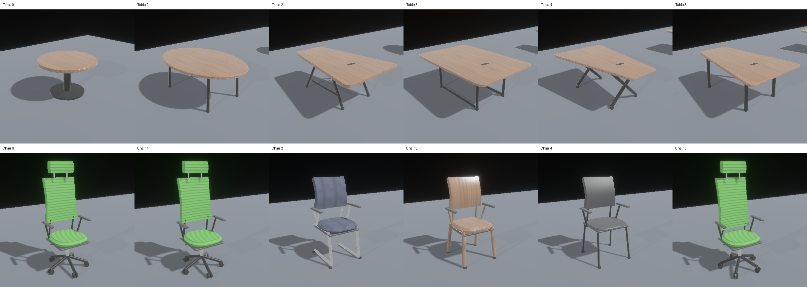
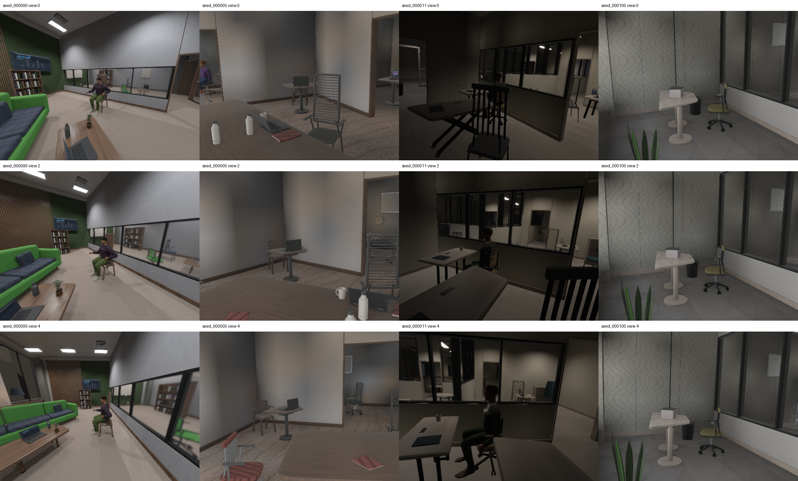
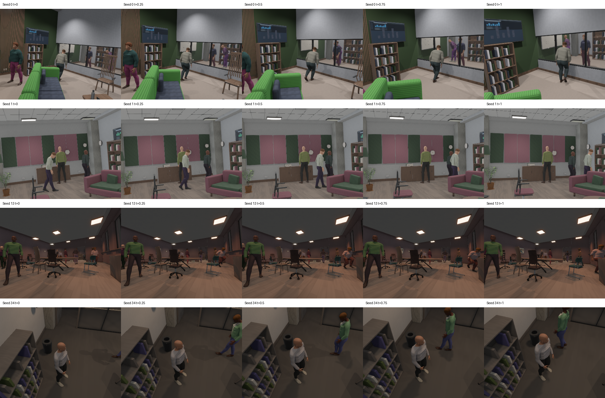
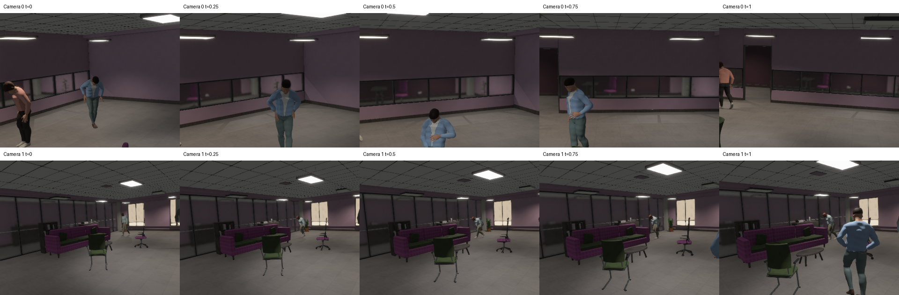

Actual native captures, generator 12. Measurements · 128-room distributions · Placement heatmaps · Camera parameters
These captures document functional changes, not proof of photographic realism.
Six selected table outlines/supports and six chair frames. Matching covers isolate geometry changes; these are examples, not exhaustive programs.

Four stratified rooms at three times. Both cameras remain in each scene's primary room; adjoining spaces can remain visible.

Four fixed seeds at five times. Rejected clips remain static; see per-scene admission reports.

Seed 44: walk/pick-up/walk and walk/crouch/walk, plus walking and skipping; all four candidates admitted.
